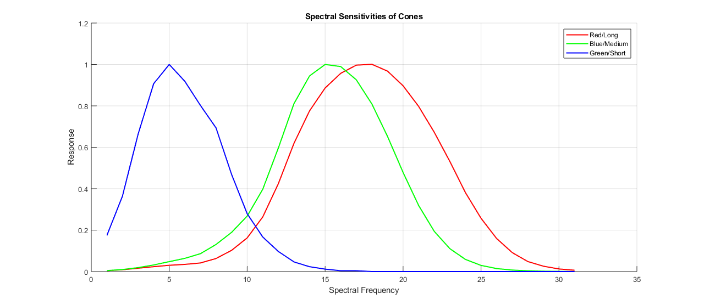

Contents
Homework2 - Question 1 - Matthew DeVerna
% Purpose: This script was written to tackle question # 1 of Math Tools % homework # 2. % Author: Matthew DeVerna % Date: 10/9/19
1. Trichromacy - Populate Workspace
% Make sure that the current directory is accurate by using --> cd 'path/of/file' % Load: colMatch.mat: 31 x 3 matrix. clear all close all load('colMatch.mat')
(A) Test Light, Combination, Plot
% Create a test light with an arbitrary wavelength spectrum by generating a random column % vector with 31 positive components (use rand). light = rand(31,1) ; % Set the primaries to object 'primaries'. primaries = P ; % Use humanColorMatcher to “run an experiment”, asking the “human” to set the intensities of % the three knob settings. knob = humanColorMatcher(light, primaries) ; % Compute the 31-dimensional wavelength spectrum of this combination with the primaries... wavelength = primaries * knob ; % ... plot it together with the original light spectrum, and explain why the two spectra % are so different, even though they appear the same to the human. plot(wavelength) hold on plot(light) title('Test Light & Primaries Combination') xlabel('Wavelength (nm)') ylabel('Tristimulus Value') grid on box off legend('Weighted Primaries', 'Test Light') % Despite being extremely different vectors, these vectors would appear % exactly the same to a human observer. The reason for this is because % the human visual system is linear, mapping all dimensions down to only % three.
(B) Characterize the human as a linear system
% What we want to do here is create a matrix which mimics the % humanColorMatching function. In order to do this, we can plug in an % identity matrix to the equation, with the primaries, and set it equal to % 'M' identity = eye(31) ; M = humanColorMatcher(identity, primaries) ; % Now lets create some random vectors and test that we get the same answer % for our new matrix compared to the humanColorMatching function. % Create test lights... test_light1 = rand(31,1) ; test_light2 = rand(31,1) ; test_light3 = rand(31,1) ; % Calculate Knob settings with new matrix... M_result1 = M * test_light1 ; M_result2 = M * test_light2 ; M_result3 = M * test_light3 ; % Calculate knob settings with humanColorMatching function... func_result1 = humanColorMatcher(test_light1, primaries) ; func_result2 = humanColorMatcher(test_light2, primaries) ; func_result3 = humanColorMatcher(test_light3, primaries) ; % Now check that they are equal by subtracting one from the other. check1 = M_result1 - func_result1 ; check2 = M_result2 - func_result2 ; check3 = M_result3 - func_result3 ; % After taking the difference between the function results and the newly % created linear system results, we see that they are the same because all % values are zero. firstCheck = check1 < 10e-6 secondCheck = check2 < 10e-6 thirdCheck = check3 < 10e-6
firstCheck = 3×1 logical array 1 1 1 secondCheck = 3×1 logical array 1 1 1 thirdCheck = 3×1 logical array 1 1 1
(C) Cones
% Plot Cones for a visual figure % I chose to break them out below simply to give them specific colors and % label them. Cones_ = Cones' ; plot(Cones_(:,1), 'r', 'LineWidth', 1.5) % RED -long hold on plot(Cones_(:,2), 'g', 'LineWidth', 1.5) % GEEN -medium plot(Cones_(:,3), 'b', 'LineWidth', 1.5) % BLUE -short xlabel('Spectral Frequency') ylabel('Response') title('Spectral Sensitivities of Cones') legend('Red/Long','Blue/Medium', 'Green/Short') grid on box off % Verify that the cones provide a physiological explanation for the % matching experiment, in that the cone absorbtions are equal for any pair % of lights that are perceptually matched. % Create new test lights light2 = rand(31,1) ; light3 = rand(31,1) ; % Use the experimental linear system created in the previous question to generate knob % settings... knob2 = M * light2 ; knob3 = M * light3 ; % Use these to weight the primaries and create a new 31 dimensional % wavelength new_wavelength2 = primaries * knob2 ; new_wavelength3 = primaries * knob3 ; % Put this through the experimental linear system new_wave_knob2 = M * new_wavelength2 ; new_wave_knob3 = M * new_wavelength3 ; % Find the difference for the following check checkEquality2 = knob2-new_wave_knob2 ; checkEquality3 = knob3-new_wave_knob3 ; % Check that the difference equals zero checkEquality2 < 10e-6 checkEquality3 < 10e-6
ans = 3×1 logical array 1 1 1 ans = 3×1 logical array 1 1 1
(D) Utilize altHumanColorMatcher() to test for color blindness
% Create a test light rand_light1 = rand(31,1) ; rand_light2 = rand(31,1) ; rand_light3 = rand(31,1) ; % Run the light through the experiment for both functions alt_result1 = altHumanColorMatcher(rand_light1, primaries) normal_result1 = humanColorMatcher(rand_light1, primaries) alt_result2 = altHumanColorMatcher(rand_light2, primaries) normal_result2 = humanColorMatcher(rand_light2, primaries) alt_result3 = altHumanColorMatcher(rand_light3, primaries) normal_result3 = humanColorMatcher(rand_light3, primaries) % Comparing these results does not reveal any concrete method for % determining whether or not an individual is color blind because they are % just going to change the knobs until they look the same - and we know % that knob settings can be set differently for people, yet look exactly % the same, because they map everything down to these three dimensions. % Now we compute the cone absorbptions % First we take all results, and create new vectors using the primaries and % the knob setting results that we just got... normal_wave1 = primaries * normal_result1 ; alt_wave1 = primaries * alt_result1 ; alt_wave2 = primaries * alt_result2 ; alt_wave3 = primaries * alt_result3 ; % Then we find the cone absorbtion for each newly created wave, and the % original created wave that the knob settings came from. "Normal" vision % would see an equal amount of Cone absorbtion in both light waves. % First for the original light... response1a = Cones * rand_light1 ; % Then for the altHumanColorMatcher function... response1b = Cones * alt_wave1 ; % Then find the difference between the knob settings that come out. check1 = response1a - response1b ; % Repeat for the next two waves... response2a = Cones * rand_light2 ; response2b = Cones * alt_wave2 ; check2 = response2a - response2b ; response3a = Cones * rand_light3 ; response3b = Cones * alt_wave3 ; check3 = response3a - response3b ; % Lastly, we do this for the light that went through the normal % humanColorMatcher function normal_response = Cones * normal_wave1 ; normal_response_org_light = Cones * rand_light1 ; normal_check = normal_response - normal_response_org_light ; % Lets compare them all... first_alt_check = abs(check1) < 10e-6 second_alt_check = abs(check2) < 10e-6 third_alt_check = abs(check3) < 10e-6 norm_check = abs(normal_check) < 10e-6 % As you can see in the results, (for the color blind person) the first and % third dimension cone absorbtion rates consistently match between the % original light and the knob-settings-primaries mixture. However, the % second dimension consistently DOES NOT match. In the last example comparing % the knob-settings-primaries mixture (based on knob settings from the "normal" % human responder) we can see that there is no difference for any of the % dimensions. % Thus, we can say that a diagnosis for colorblindness is one in which a % human respondent's chosen knob settings will only depend on TWO (or one) of the % three color dimensions that they are offered.
alt_result1 =
0.8875
-4.8289
6.2023
normal_result1 =
1.2971
0.0246
0.6053
alt_result2 =
-0.0065
-3.8842
5.4499
normal_result2 =
0.3612
0.4728
0.4254
alt_result3 =
1.0201
-1.2936
2.0512
normal_result3 =
1.0909
-0.4550
1.0841
first_alt_check =
3×1 logical array
1
0
1
second_alt_check =
3×1 logical array
1
0
1
third_alt_check =
3×1 logical array
1
0
1
norm_check =
3×1 logical array
1
1
1